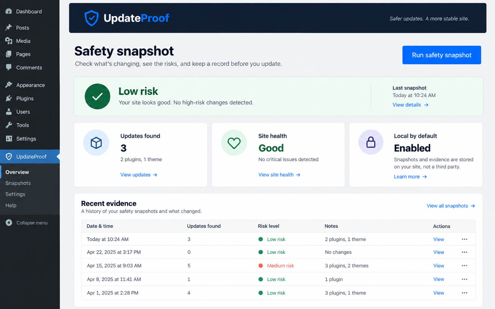
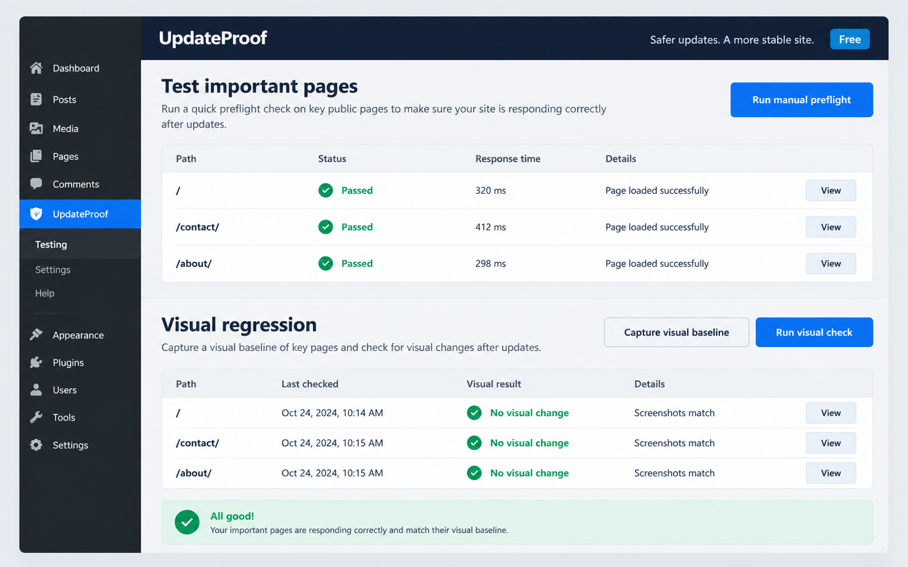

01Before you update
Check
Capture a local snapshot of your site, versions, updates, and current risk signal.
You get a baselineMaintenance confidence for busy site owners
UpdateProof gives you a calm, evidence-first workflow for site maintenance: check the site, test important pages, review what will change, and approve only when you are ready.
A clearer maintenance rhythm
UpdateProof gives every maintenance window the same calm rhythm: establish a baseline, test what visitors see, review what will change, and approve only when the evidence is clear.
Capture a local snapshot of your site, versions, updates, and current risk signal.
You get a baselineRun HTTP checks and optional visual comparisons against the public pages that matter most.
You get page evidenceSee available plugin and theme changes, compare evidence, and create a reviewable plan.
You get a clear planChoose the moment and explicitly approve. UpdateProof never changes the site just because an update exists.
You keep controlFree / Base
Useful evidence without sending site content to a remote dashboard. Install the free plugin and make your next maintenance window easier to explain.
Record WordPress, PHP, active plugins, theme details, updates, and a clear risk signal.
Check up to four same-site URLs for status, response time, and privacy-safe fingerprints.
Optionally compare up to three public pages with an administrator-owned Chromium worker.
Create a plugin or theme deployment plan, review it, and approve it explicitly.
Run checks after the update and keep a local deployment history for future reference.
Use authenticated, read-only REST endpoints and optional per-site tokens for integrations.
Free plugin preview
The Free plugin keeps the important maintenance signals in one clear admin workspace: what changed, what passed, and what needs your attention.


UpdateProof Pro
Pro is for freelancers, agencies, and teams who want recurring evidence, clearer handoffs, and a safer path toward recovery workflows. It is currently a private preview, so every capability is labelled honestly as available or planned.
Schedule local safety checks so your next maintenance window starts with fresh evidence.
Use optional email summaries and recent history to make routine maintenance easier to report.
Confirm a tested restore point before a Pro approval can move forward.
Your next step
Install Free today. Run one snapshot and one test. If the workflow helps, Pro is the natural next layer for recurring evidence.
Simple annual plans
Every paid plan is annual in V1 so the hosted browser checks and licensing service can remain maintained and reliable.
For individual site owners trying UpdateProof.
For site owners and freelancers.
For freelancers managing client websites.
For agencies and maintenance businesses.
UpdateProof annual subscription
Choose an annual plan, complete payment securely with Razorpay Subscriptions, and save the license key shown after payment verification.
Recurring evidence, workflow records, and client-ready reports. Your entitlement continues until the paid expiry date even if you cancel renewal.
Enter your license key to create a secure download link for the latest UpdateProof Pro package.
Choose your level of confidence
Questions, answered plainly
No. The Free workflow requires you to create a plan and explicitly approve plugin or theme changes. Pro scheduled checks collect evidence; they do not apply updates automatically.
No. The Free plugin stores its safety evidence locally and does not transmit PHP source code, post content, or visitor data.
Not yet. The current Pro preview records recovery readiness and blocks approval until you confirm a tested restore point. A real provider integration will be added only after it is tested.
Freelancers, agencies, developers, and site owners who want a simple maintenance record before and after updates.
Your next update can feel different
Start with the free plugin and build a maintenance habit your clients and future self can trust.